手持ちの Excel ファイルと Microsoft Flow で簡単な Web サービスを作成する
公開日：
Excel で管理しているデータを Web サービス に再利用したいといったことはままあると思います。そういう場合、普通ならば
- Excel のテーブルデータをデータベースに移す
- スクリプトで Web アプリをガシガシ書く
- それを Web サーバーにホストして、アクセスできるようにする
- サーバーが落ちたり、プラットフォームの更新があれば対応する
という感じで運用するんだと思いますが、ちょっとしたモノにそこまで手間をかけるのはウンコ面倒です。というわけで、今回はそれを Microsoft Flow でやってみました。Microsoft Flow はよく「IFTTT」みたいなものと表現されますが、ずっと強力であることが分かると思います。
Web サービスの方が柔軟性はありますが、Microsoft Flow で作ると
- Excel なのでみんなで気軽にデータを追加・削除できる（データベースの管理 UI が要らないし、気分的にとっつきやすい。ただし、素人がぐちゃぐちゃにする恐れはある）
- スクリプト言語苦手でも、多少ロジックが組める人なら大丈夫（関数とかほとんど出てこない）
- サーバーを用意したり、管理する必要がなくなる
のは結構メリットなんじゃないでしょうか。
三分間クッキング
今回は題材として「なにかを問い合わせたら Excel のデータを舐めて変換する」サービスを作ってみます。たまたま手元に「ベクターのソフト公開ページの URL と作者サイト・窓の杜ライブラリの関係」を管理した Excel ファイルがあるので、それを使って「ベクターの URL を投げたら、作者と窓の杜ライブラリの URL を返す」アプリ（Web サービス）を作ってみます。
完成イメージはこんな感じです。
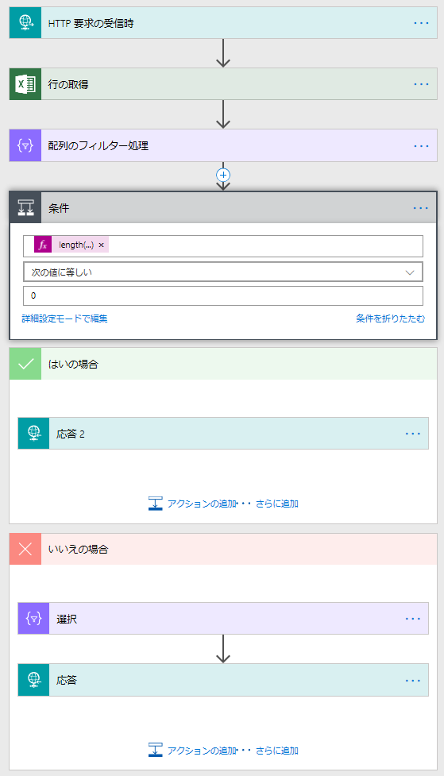
- JSON で HTTP 要求を受けたら
- OneDrive に置いた Excel のテーブルを読んで
- ベクターの URL に合致する行を取得し
- なければ 404 を返す
- あれば
- 配列を生成し
- 200 で JSON を返す
ウンコ簡単だね！！
1. JSON で HTTP 要求を受けたら
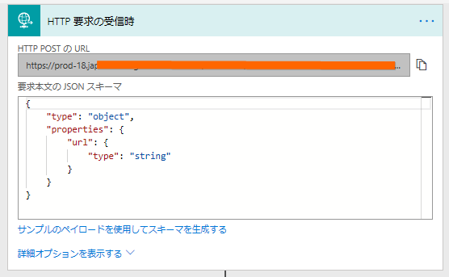
まず、［HTTP 要求の受信時］というトリガー（切っ掛け）を追加。［サンプルのペイロードを使用してスキーマを生成する］でサンプルをぶち込んでスキーマを作ります。
今回はシンプルにこんな感じのペイロード（リクエストの中身）にしてみました。
{ "url":"https://www.vector.co.jp/..." }
Microsoft Flow はたいへん賢いので、これを読み込ませると勝手にスキーマ（リクエストの型枠）を作ってくれます。
{ "type": "object", "properties": { "url": { "type": "string" } } }
これで受け付けは完了。すごく長い URL が生成されるので、それを content-type ヘッダーを application/json にして POST で叩けばフロー（一連の処理）が始まります。
OneDrive に置いた Excel のテーブルを読む
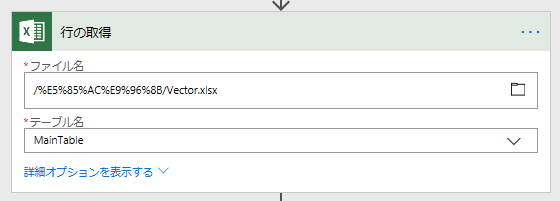
次に、Excel ファイルを読みます。Microsoft のサービスだけあって、OneDrive との相性がいいですが、別に Google スプレッドシートでも構わないと思います。試してないけど。今回はしょうもないところでコケるのもアホらしいので、OneDrive で試してみました。
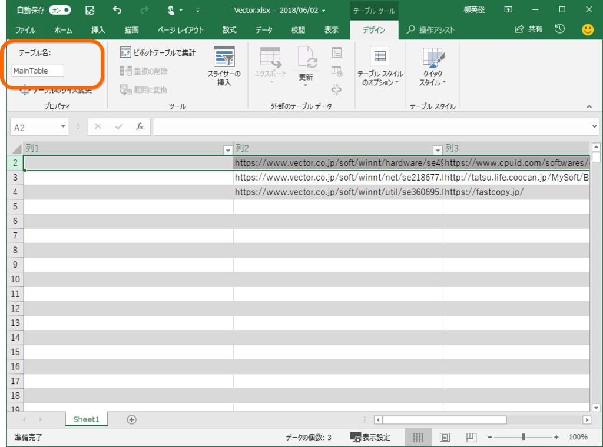
何の変哲もない Excel ファイルですが以下の点には気を付けてください。
- 個人向け OneDrive を利用している場合は、他の人と共有しているフォルダーに配置しないでください。見れないっぽい……
- 10,000 行とかになると扱えなくなります……おとなしく自分でアプリ組め
- テーブルにはわかりやすい名前を付けておくといいよ。ヘッダーにも適切な名前があるといいかもね
- 一度 Microsoft Flow で使うと勝手に __PowerAppsId__ という列が追加されるが、気にするな
この［行を取得］コマンドは value という名前で取得した行をすべて返します。Microsoft Flow には FindFirst() みたいな要素を1つだけ取得する処理はないので、複数の値が返ってくるかもしれません。
ベクターの URL に合致する行を取得
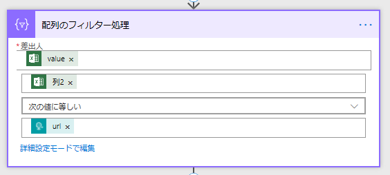
続いて、［配列のフィルター処理］を追加して、目的の URL が含まれる行だけを取得します。
要素がなければ 404 を返す、あれば処理を続ける
(2018/06/05 追記：Microsoft Flow にこのサービスを組み込む場合、404 を返すと次のステップに進めなくなります。分岐を削除して、生成した配列をそのまま返すといいです)
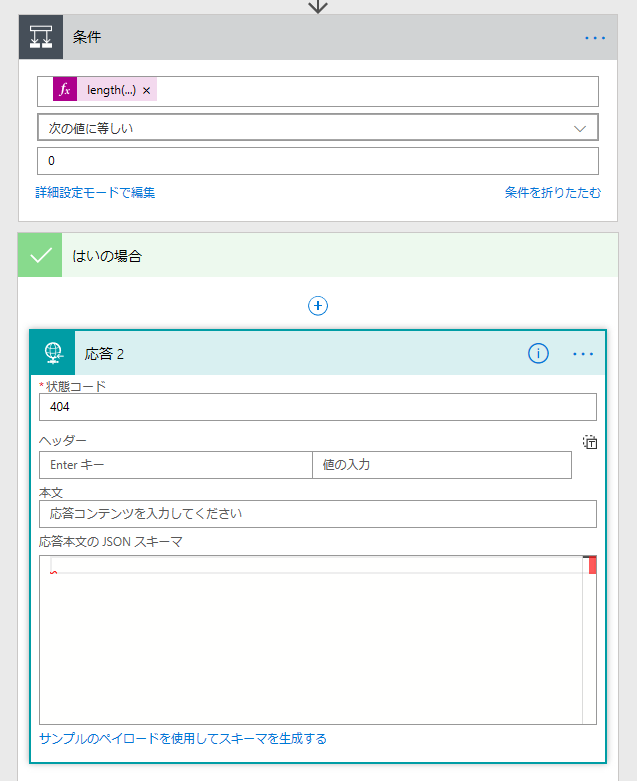
この処理はなくてもいいです（空の JSON を返してもいいわけで）。今回はほかの Flow と接続するときに条件分岐がしやすいように、あらかじめチェックをくわえておきました。
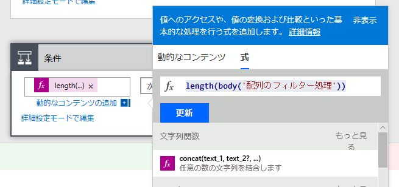
ほとんどの処理をブロックで表現できる Microsoft Flow でも、「要素の数を求める」みたいなのはさすがに無理みたいで、ここで初めて関数が登場します。length(body('配列のフィルター処理')) というのがそれです。［配列のフィルター処理］の結果（body）に Length() 関数を適用しています（"配列のフィルター処理"というのが気に入らなければ、前の処理の名前をわかりやすいのに変えてね！）。
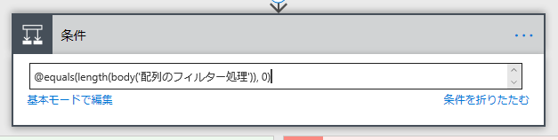
慣れてる人は Microsoft Flow の内部表現で直接書いてもいいです（詳細モード）。
@equals(length(body('配列のフィルター処理')), 0)
配列を生成
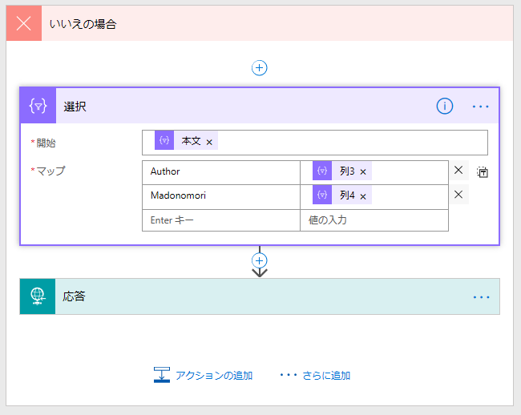
いよいよ大詰め、返すデータを準備しましょう。日本語訳があまりよくなくて［選択］となっていますが、これが要するに「新しい配列を作る」コマンドです（SQL/LINQ の Select() です）。［配列のフィルター処理］を通った後の結果（body、クソ翻訳では"本文"）をテーブルにマップしていきます。ここでは「列3のデータには Author っていう名前を付けるよ、列4 は Madonomori ね」ってことです。
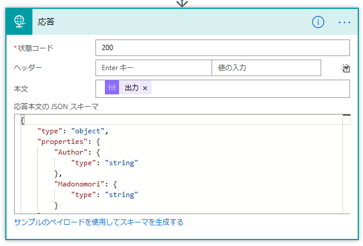
最後に、最初の要求受け付けのときと同じようにスキーマを作ります。これもサンプルから簡単に生成できます。
[{"Author":"http://...","Madonomori":""}]
みたいな感じでゲットできればいいわけなので、それを渡すと
{ "type": "object", "properties": { "Author": { "type": "string" }, "Madonomori": { "type": "string" } } }
というスキーマが出力されます。これで完成！ あ、配列じゃなくて1要素だけ返したいときは、［データ操作 - 作成］っていうコマンドで first() 関数を当ててやると最初のデータだけを抜くことができるみたいです。スキーマは、今回挙げたサンプルから一番外側の [] を抜いて再生成すればオッケーだと思う。知らんけど。
試してみる
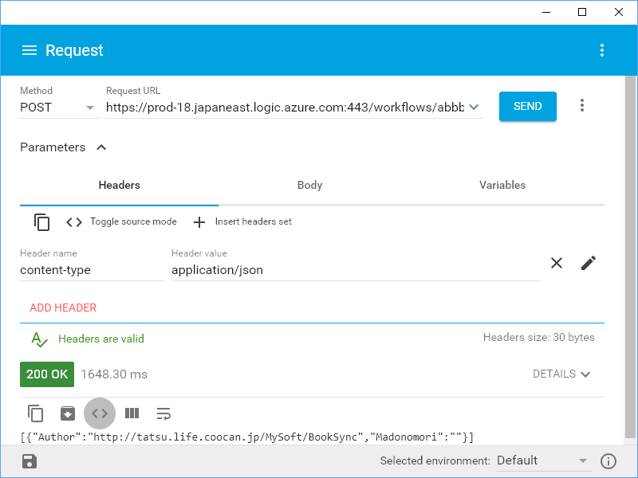
できあがったフローは、「Advanced Rest Client」っていう Chrome アプリで試すといいです。最初に言ったけど、content-type ヘッダーを application/json にして POST で叩くのを忘れずにね。API のエンドポイントの名前が長いから、短縮 URL とかするといいのかもしれませんねぇ（ただし、セキュリティには気をつけてな、第三者にはあまり漏らさない方がいいと思う）。
ちなみに、失敗したときは Microsoft Flow の実行履歴をみると、フローのどの段階でコケているのかがわかります。
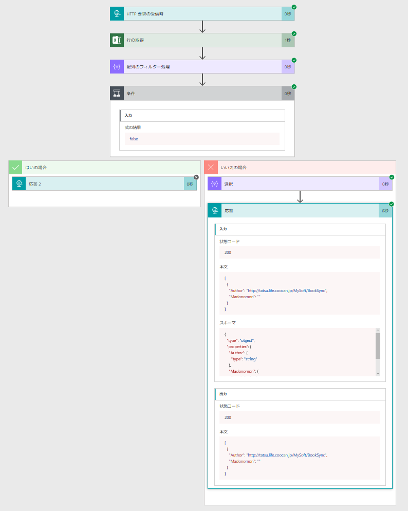
そんじゃーね！
謝辞
たぶん typo なんだと思う（
— だる☆やなぎ (@daruyanagi) 2018年6月2日